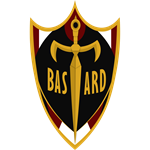

LIGA NEO-EGOÍSTA: AS CINCO GRANDES
Os avançados de Blue Lock foram integrados nestas cinco potências mundiais para refinar o seu Ego, absorvendo as suas filosofias táticas e estilos de jogo.



Bastard München
Racionalidade e perfeição tática.Mestre: Noel Noa.
P.X.G.
Caos criativo e talento individual puro.
Mestre: Julian Loki.
Manshine City
Velocidade e força física esmagadora.
Mestre: Chris Prince.
Ubers
Defesa perfeita e contra-ataque letal.
Mestre: Marc Snuffy.
Barcha FC
Futebol de fantasia e improvisação.
Mestre: Lavinho.
Bastard München
Racionalidade e perfeição tática.
Mestre: Noel Noa.
P.X.G.
Caos criativo e talento individual puro.
Mestre: Julian Loki.
Manshine City
Velocidade e força física esmagadora.
Mestre: Chris Prince.
Ubers
Defesa perfeita e contra-ataque letal.
Mestre: Marc Snuffy.
Barcha FC
Futebol de fantasia e improvisação.
Mestre: Lavinho.